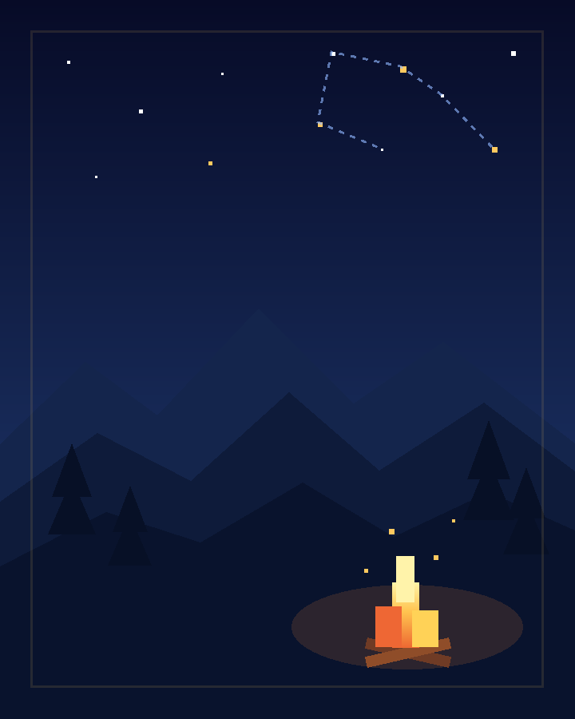
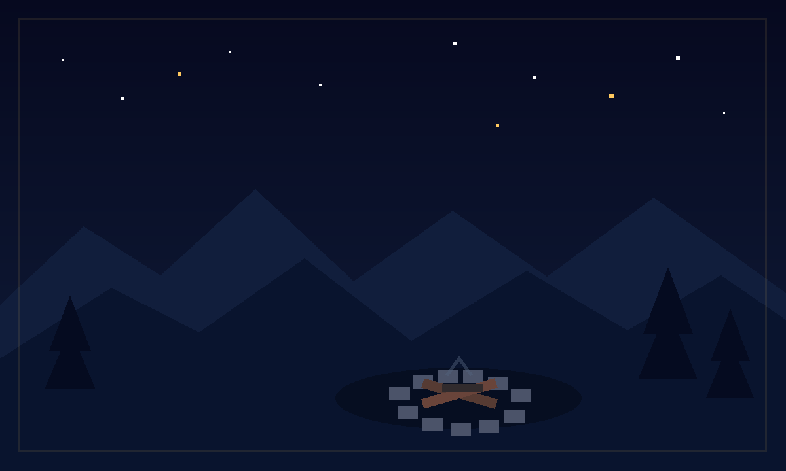

COURSE課程與行動
SPARK PROJECT · COMPLETE BLUEPRINT
星火計畫
點亮心中的光，
讓成長被看見。
從一堂課、一個作品與一次真實回饋開始，建立能持續學習、傳遞善意，並逐步擴張的成長生態。
看見努力累積能力傳遞影響

GROWTH作品與成長
FEEDBACK星光與回饋
PLAN NAVIGATION
用按鈕探索完整計畫
先選擇階段，再點擊計畫圖騰。每個計畫皆整理定位、服務對象、核心產品、執行流程、商業模式與成果指標。
THREE-STAGE ROADMAP
先驗證，再深耕，最後擴散
每一階段都有清楚的成果門檻。只有當產品、教學、安全與單位經濟被驗證後，才進入下一階段。
點亮起點
驗證課程、點數、付費、留存與星光回饋，建立第一個營運閉環。
雙軌並行
星空深耕能力；傳火培養穩定、善意與行動，兩者共用平台但分開衡量。
整合與擴散
星河推進跨域共創；燎原建立授權、帶領者與城市節點。
